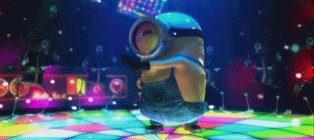

GIF Format Example

About This Image
The most famous meme used of all time, this is me when I hear calling all the monsters by China Anne McClain!! Looking at this gif how could you not like miniona. This is bob moving crazy on the dance floor. I recommned watching all of the minion movies, and despicle me movies as well, you'll understand the lore and likeness for minions.
Why GIF Format?
In my personal opinion I think the gif format is the best one out of the 3. Not only is it funny, it brings out the exictment of the image, it makes it look more alive. It's also best used for line art and logos, maximum of 256 colors. One color can be configured as transparent, Can be animated and uses lossless compression (data compression that reduces file sizes without sacrificing any significant information in the process)
Image source credit: Visit Giphy